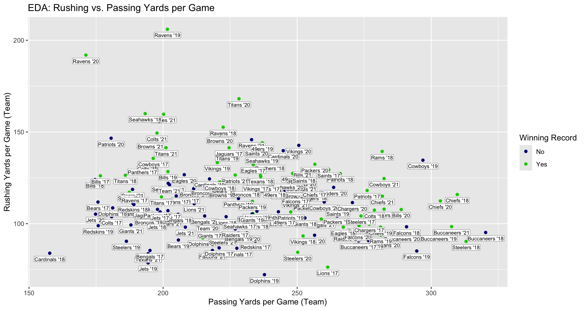
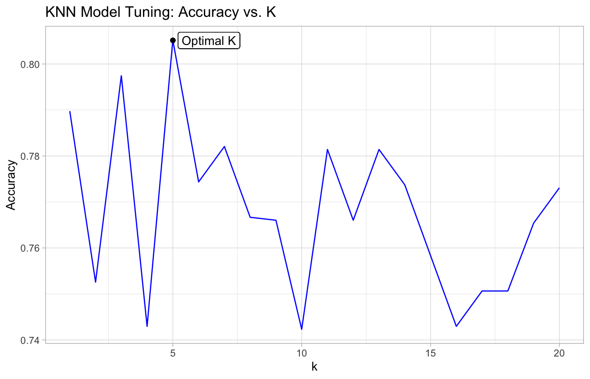
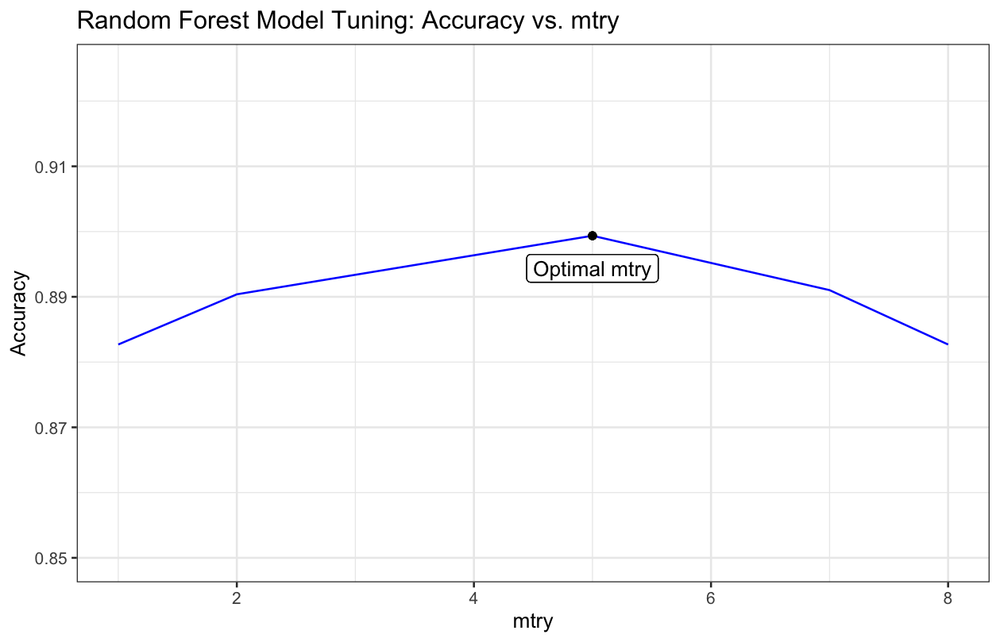
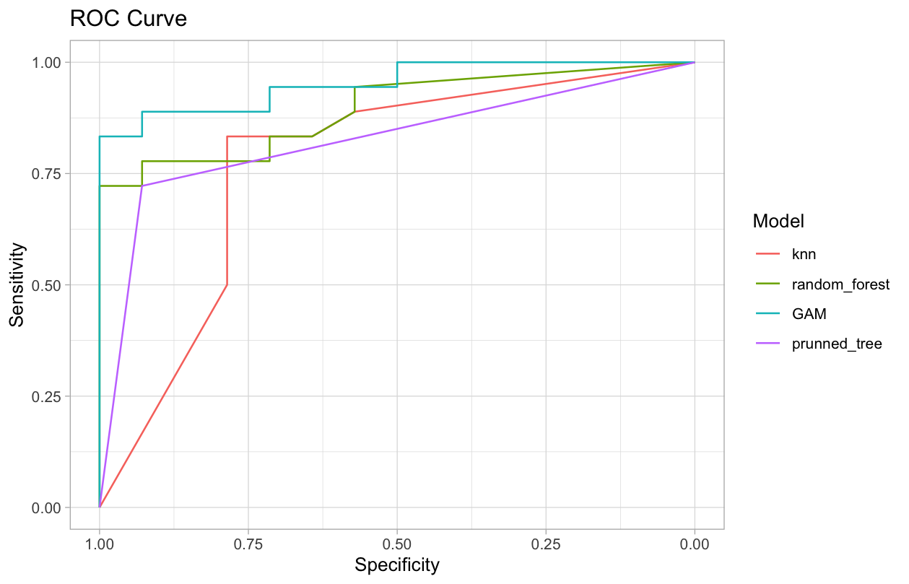

Shea van den Broek
M.Sc., Statistics, University of Connecticut
B.A., Statistics, Williams College
M.Sc., Statistics, University of Connecticut
B.A., Statistics, Williams College
Page Under Construction
Built an RShiny application focused on confidence, prediction, & tolerance intervals to bridge the gap between statisticians and lab scientists.
In progress.
Pulled together available country-specific economic and general data from various sources, to explore which factors are most impactful to and predictive of net migration and happiness index.
In progress.
Implemented machine learning methods on offensive and defensive statistics, including K Nearest Neighbors, LOESS, GAM, and Support Vector Machines in R to predict team NFL success.
Selection of Plots:
   Presented 30-minute colloquium communicating results of published paper using statistics to evaluate the role of skill in daily fantasy sports, and extended with a simulation and analysis in R.
Subset of Slides:
.png)
.png)
.png)
Simulation Slides and Code